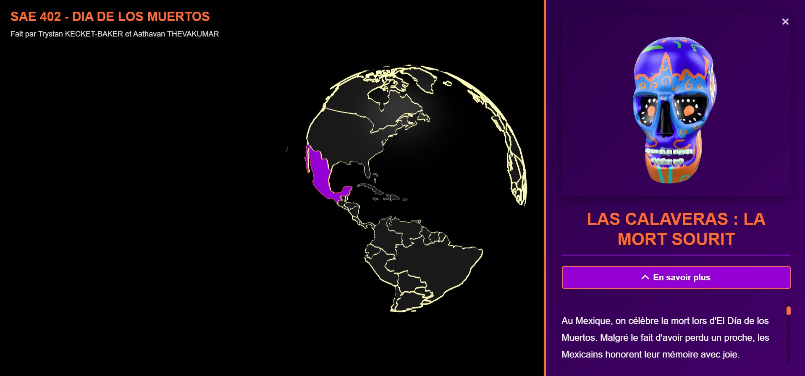

Réalisation du projet Calavares, centré sur la mise en valeur d’une culture spécifique à travers la création et l’intégration d’un modèle 3D. Le projet propose une présentation visuelle et explicative des éléments culturels, afin de rendre l’apprentissage plus immersif et interactif. Un camarade a travaillé sur la conception de la carte du monde, utilisée pour localiser et afficher la culture présentée. Le projet met en avant la collaboration, la visualisation 3D et la contextualisation géographique des contenus.
